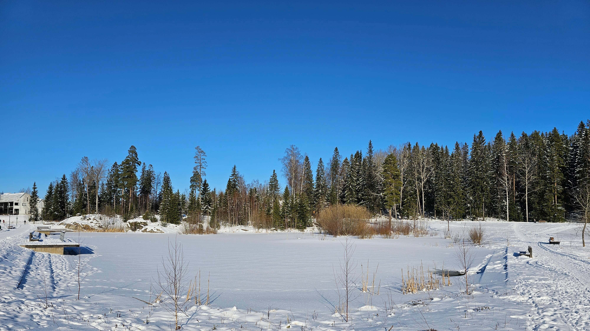

Vuores - pikkukaupunki luonnon kainalossa
Ainutlaatuinen yhdistelmä uusimpia teknisiä ratkaisuja, laadukasta arkkitehtuuria, ekologisuutta, taidetta luonnonläheisyyttä unohtamatta. Sitä kaikkea on Vuores, yksi Tampereen uusimmista kaupunginosista.
Vuoreksessa pidettiin asuntomessut vuonna 2012. Siitä lähtien kaupunginosa on rakentunut ja sen arvioidaan valmistuvan vuonna 2025. Tällä hetkellä Vuoreksessa asuu noin 7400 asukasta.
Asuintaloissa kiinnostava arkkitehtuuri yhdistyy moderniin talotekniikkaan
Vuoreksen Puistokatu on kaupunginosan sydän
Alueella panostetaan kävely- ja pyöräilyreitteihin

Vuores on pienten järvien ja metsien ympäröimä